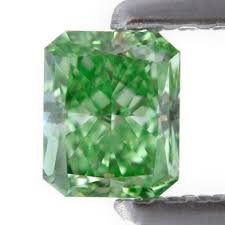

The Monk Diamond is famous for its distinctive green colour.
A Russian nobleman bought
the diamond for his wife in 1889, but it was stolen during the Russian Revolution.
For
the next 30 years, the Monk Diamond’s whereabouts were unknown.
In 1947 it was
discovered during a police raid on a gang of petty criminals in Moscow.
It was returned
to the nobleman’s family.
The nobleman’s son decided the Monk Diamond was unlucky
and sold it to the House of Volkov, Moscow’s oldest jewellery house.
The House of Volkov
paid an undisclosed sum for the jewel, but it was rumoured to be the most expensive diamond sale ever.
